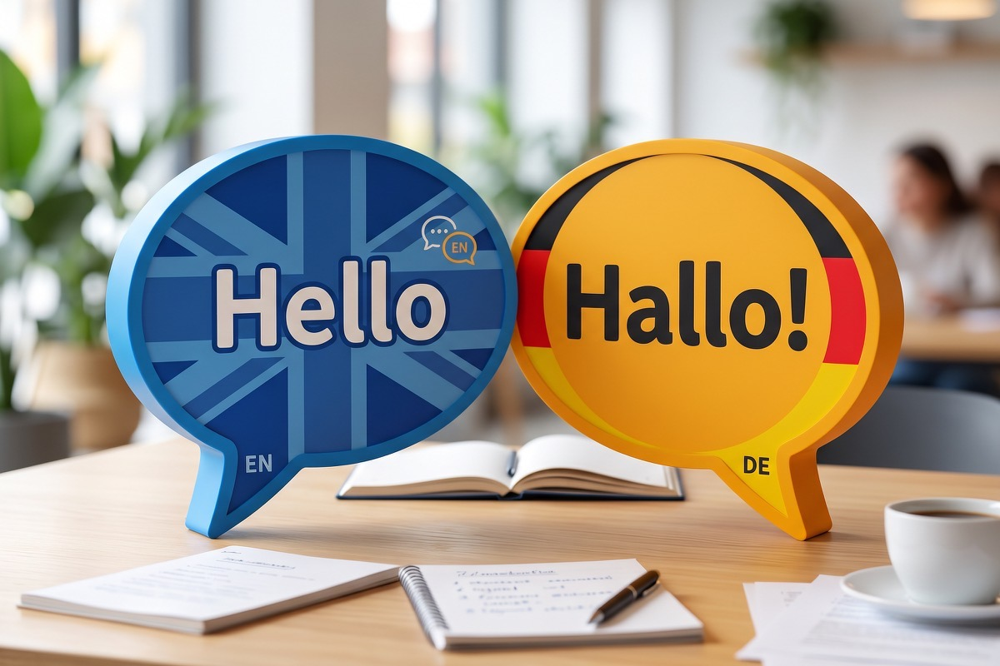
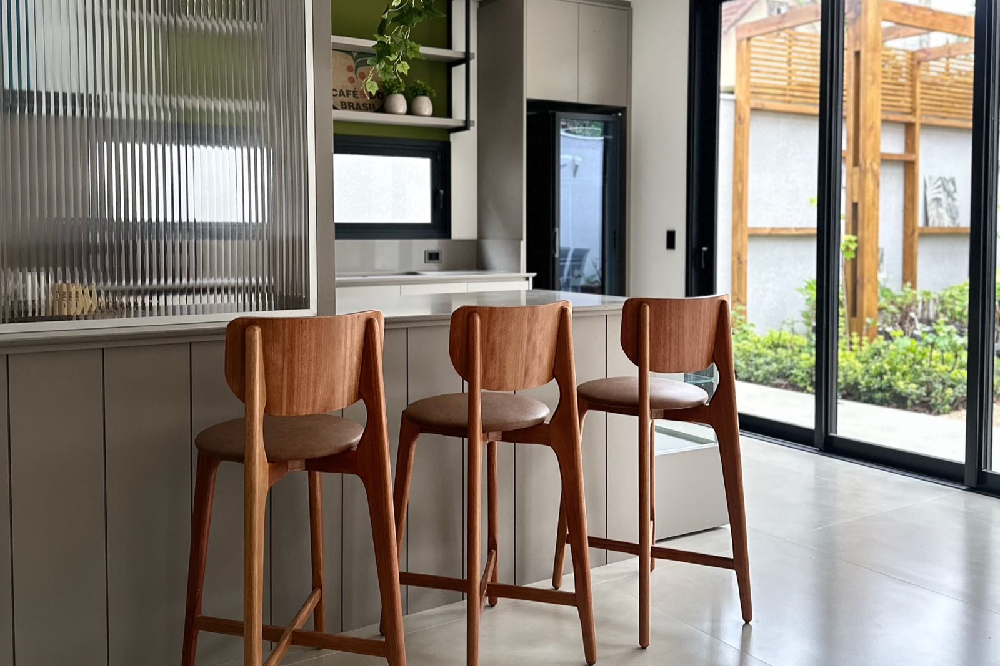
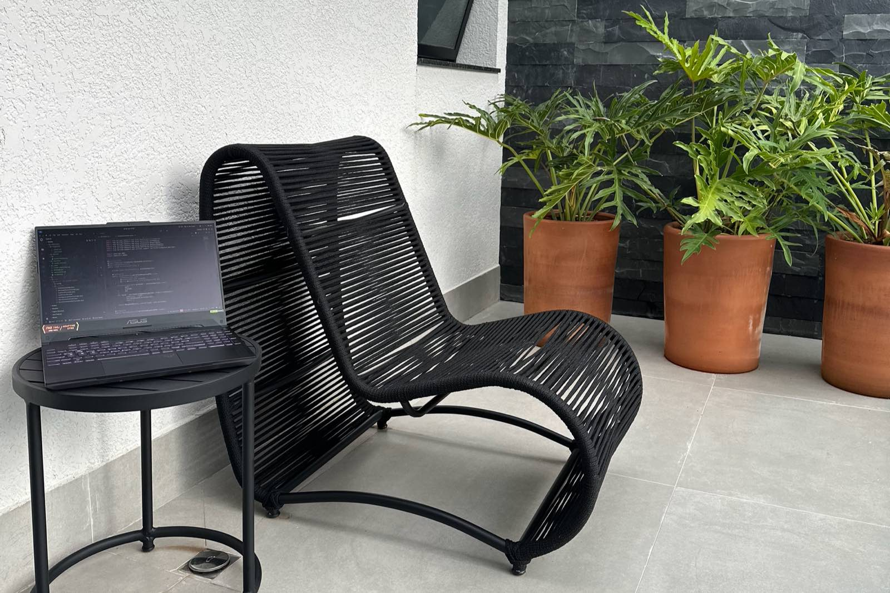
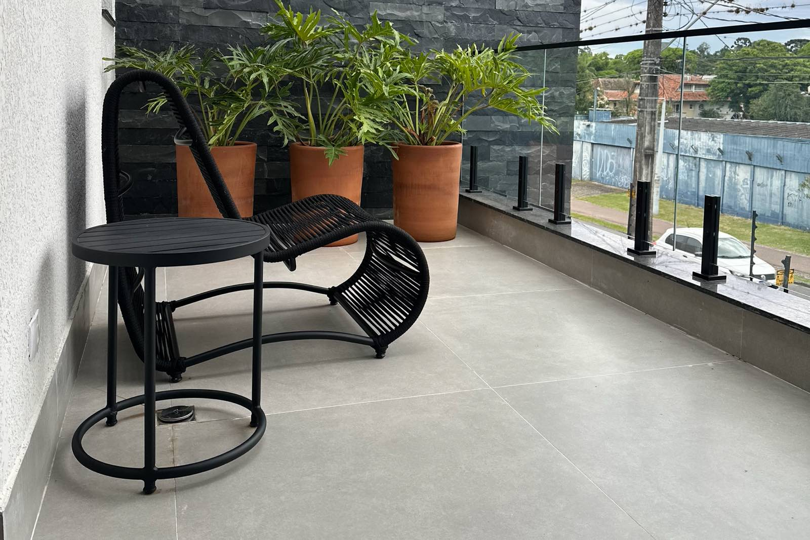
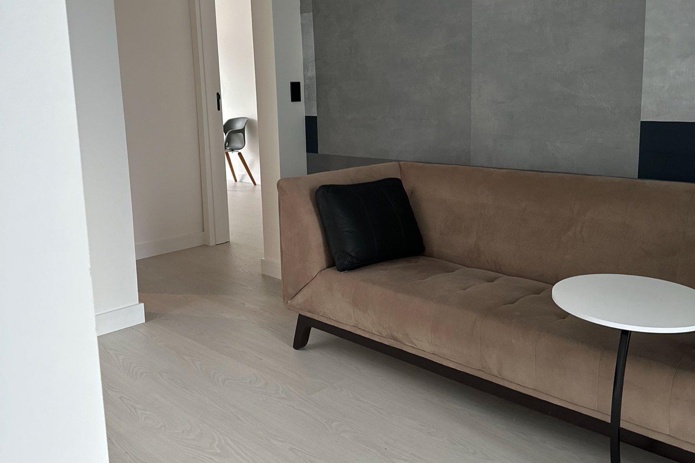
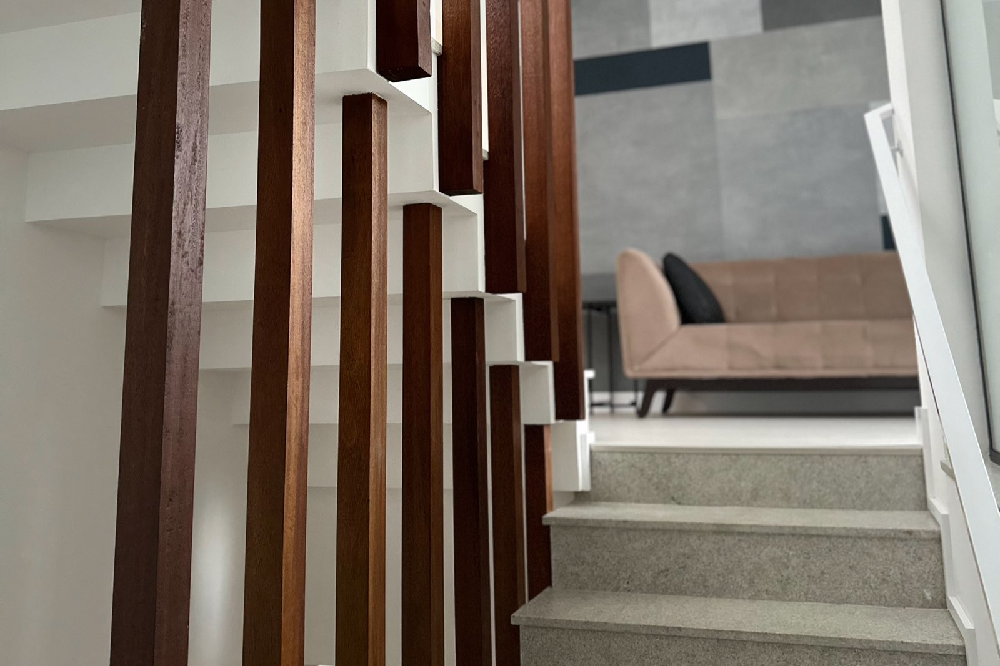
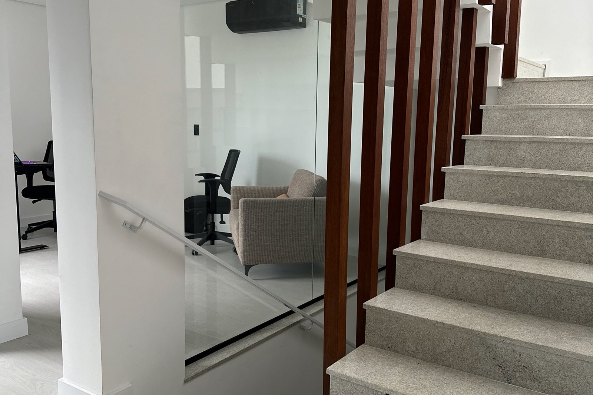

Christian Michael Lemke
COO — Chief Operating Officer
Responsible for operational management, process efficiency and strategic alignment of Just Code People's activities. Focuses on organizing operations and the quality of execution.
Brazilian technology company specialized in Salesforce, built to work without borders.
We are a Brazilian technology company based in Curitiba, Paraná, specialized in Salesforce solutions and committed to the digital transformation of businesses in Brazil and abroad. We combine technical expertise, innovation and a bilingual team to deliver tailored solutions that meet each client's needs.
Our work ranges from implementing Salesforce solutions to custom development, always focused on efficiency, scalability and results. More than implementing technology, we build lasting partnerships and drive the sustainable growth of your business.
Our leadership connects our clients' needs with the company's organization and evolution.
COO — Chief Operating Officer
Responsible for operational management, process efficiency and strategic alignment of Just Code People's activities. Focuses on organizing operations and the quality of execution.
CMO — Chief Marketing Officer
Responsible for marketing strategy, brand positioning and market expansion, helping bring the company closer to international clients and partners.
We have a bilingual team to make communication with international clients easier. This closeness helps us understand requirements, keep decisions transparent and follow deliveries from start to finish.
Portuguese and English throughout the whole project.
Shared decisions and continuous follow-up.

We value knowledge sharing, teamwork and clear communication. Our environment is oriented to collaboration across specialties, continuous learning and care for the quality of every delivery.
Continuous learning across specialties.
Organization, clarity and accountability.
Headquarters






Project Manager / Product Owner
Organizes priorities, deadlines and deliveries.
Business Analyst
Translates challenges into clear requirements.
Software Architect
Structures sustainable, scalable solutions.
Salesforce Developers
Builds features, customizations and integrations.
QA
Tests and validates deliveries.
DevOps / Infra
Supports deployment and environment stability.
We adapt technology to each client's processes and goals.
Custom configuration and development for the client's processes.
Learn more →Maintenance, follow-up and continuous evolution of the Salesforce environment.
Learn more →Creating features, customizations, automations and integrations that turn specific needs into efficient, scalable Salesforce solutions.
Understanding the needs.
Scope, priorities and architecture.
Features and integrations.
Testing and validation of deliveries.
Delivery, support and continuous improvement.

We combine Salesforce focus, diverse technical skills, bilingual service and an agile, collaborative approach. We aim to build relationships of trust and solutions consistent with each client's real needs.
Technical knowledge focused on the platform.
Management, analysis, architecture, development and quality.
Close communication with international clients.
Solutions consistent with real business needs.
Constantly seeking better solutions.
Code that stands the test of time.
Your success is our success.
Staying ahead of the tech curve.
Our commitment is to deliver technology with purpose, transparent communication and attention to quality, developing solutions that contribute to your business's efficiency and growth.
Talk to our team